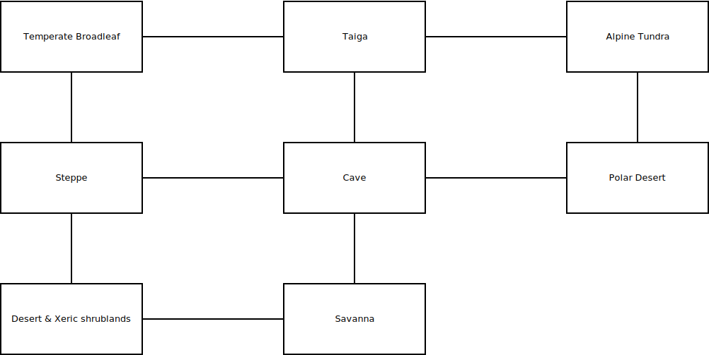

Auteur
L'auteur de ce projet est Rémi NICOLE, étudiant à l'ESIEE en E1-4, groupe de projet 4M
Thème
Le thème du projet est "Dans une forêt, un homme doit mettre un robot hors service pour s'en délivrer.".
Résumé du scénario
Un homme se retrouve dans une forêt, mystérieusement lié avec un robot ayant un complexe de pouvoir et doit s'en débarrasser. Pour se faire, il va devoir ramasser une boule de neige, de laquelle le robot va s'enticher. Mais à cause de ces circuits, le dit robot va faire fondre la boule de neige. Ensuite, le joueur va devoir ramasser une deuxième boule de neige et la lancer dans l'eau afin que le robot essaye d'aller la chercher. À cause du fait que au contact de l'eau, les résistances des composants électroniques du robot vont gravement chuter, le robot va donc se retrouver hors service et le joueur a gagné.
Plan
